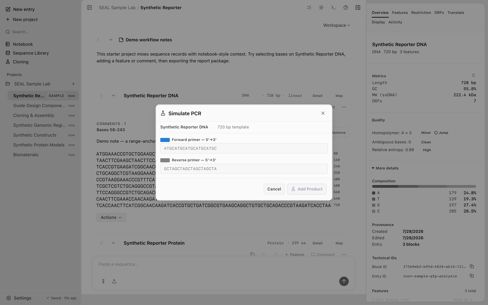

Primer design
Screenshots and recordings show the direct edition. Compare editions.
Design and rank PCR primers with Tm, GC, and 3' clamp checks. Give a template and a target region, and SEAL searches the flanking sequence for primer pairs and ranks them.
Watch the walkthrough
Open the primer tools and compare candidate sequences and their properties.
1:07 · AI narrationDownload video (18.7 MB)English captions
Read the transcript
Open Synthetic Reporter and select Synthetic Reporter DNA. Use the block's Actions menu and choose Design primers. The dialog calculates candidate pairs for the selected target.
Check the target coordinates first. This example uses bases fifty-one through five hundred fifty. The primer length range is eighteen to twenty-eight bases, and the target melting temperature is sixty degrees Celsius. These settings appear above the ranked results.
Read Pair one. Its forward and reverse sequences are shown in the five-prime to three-prime direction. Compare their melting temperatures and GC percentages, and check the predicted amplicon length. This pair produces a five hundred fourteen base-pair amplicon.
Click Add selected pair. The dialog closes after adding the annotations. Open Features in the Inspector to verify the result. The source DNA now includes a named forward primer and reverse primer alongside its existing annotations. You can use those feature names and coordinates to revisit the selected pair.
Add a primer pair to the sample reporter
Start with the Sample Lab loaded. This example designs a pair around bases 51–550 of its 720 bp reporter.
- In the sidebar, open SEAL Sample Lab → Synthetic Reporter and click Synthetic Reporter DNA.
- Open Actions beneath the DNA block and choose Design primers.
- Set Target start (1-indexed) to 51 and Target end (1-indexed) to 550. Set Primer length to 18–28 and Target Tm to 60 °C.
- Read Pair 1 in the ranked results. Both sequences are shown 5′ to 3′. Compare their Tm and GC values, and check the predicted 514 bp amplicon.
- Select Pair 1 and click Add selected pair. The dialog closes.
- Open Features in the Inspector. Find Fwd primer 1 (Synthetic Reporter DNA) and Rev primer 1 (Synthetic Reporter DNA), marked PRIMER_BIND on the forward and reverse strands.
The pair is saved as two features on the source DNA. Use their names and coordinates to revisit the predicted binding sites.
Design primers from the CLI
Use seal primers with a template and a target region. The region is set with --start and --end, both 0-indexed (end is exclusive). SEAL designs primers flanking that region.
seal primers myseq.fa --start 100 --end 400Tune the target melting temperature with --tm (default 60.0 °C) and bound primer length with --min-length and --max-length (defaults 18 and 28). Add --json for machine-readable output.
seal primers myseq.fa --start 100 --end 400 --tm 62 --json
| Flag | Default | Description |
|---|---|---|
--start <n> | required | Target region start, 0-indexed. |
--end <n> | required | Target region end, 0-indexed, exclusive. |
--tm <t> | 60.0 | Target melting temperature in °C. |
--min-length <n> | 18 | Minimum primer length in bases. |
--max-length <n> | 28 | Maximum primer length in bases. |
--json | false | Emit structured JSON output. |
Ranking
Candidate pairs are scored and sorted so the closest match to your target comes first. The score combines two terms:
|Tm - targetTm| + anchorDistance × 0.05The first term is the absolute difference between a primer's melting temperature and your target Tm, so pairs near the requested Tm rank higher. The second term, anchorDistance, penalizes primers that sit farther from the target region, weighted at 0.05. A lower combined score is a better pair.
Presets
The flanking-region scan in the desktop app ships three built-in presets that set the search parameters for common reaction styles:
- Standard PCR for routine PCR.
- Touchdown PCR (higher Tm) for touchdown thermocycling.
- Cloning (long inserts) for primers intended for downstream assembly.
You can also save your own presets. A user-saved preset stores the parameters you chose so you can reuse them across runs.
Flanking-region scan
The flanking-region scan searches the sequence on both sides of the target for primer pairs, then ranks them with the score above. Run it in the desktop app over a selected region. Use a built-in preset, or save your own, to set the Tm window and search behavior before scanning.
Diagnostics
When the scan finds no acceptable pairs, SEAL reports why instead of returning an empty result. The callout breaks down how many candidates each check rejected:
0 pairs (no forward candidates): rejected X by GC%, Y by Tm, Z by 3' GC clampEach number is the count of candidates filtered out by that check: GC content, melting temperature, the 3' GC clamp, hairpins, and self-dimers. Read it to see which constraint to loosen. For example, a high count under Tm means your target Tm or length bounds are too tight for this region.
Keyboard shortcut
Open the flanking-region scan in the desktop app with Cmd Shift U.

Agents can design primers over MCP with the design_primers tool, which adds enzyme-tail presets and GC bounds. To test a designed pair against a template, use pcr. See the MCP tool reference.